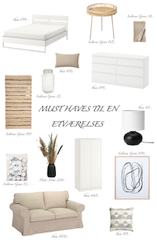

Musthaves til en enkel og billig etværelseslejlighed
Det vigtigsete når man skal indrette en etværelses lejlighed…
Få rummet at se hyggeligt og overskueligt ud. Når lejligheden er få kvadrameter, kan den
hurtigt komme til at se rodet ud hvis der er for mange ting.
Når man har en etværelses, skal man undgå…
At bruge for mange mørke farver. Ved at gøre brug af lyse farver, kommer rummet til
at se større og lettere ud. Lyse Jordfarver blandet med hvid er eks. med til at give en mere rolig effekt.
Nipsting er vigtige, men….
De kan hurtigt blive for meget. De gør en stor del af indretning men endelig ikke ha for mange.
Det kan hurtigt blive for meget og det rodet og derved overtage rummet.
Tænk på opbevaringsmuligheder….
I en lille lejlighed er opbevaring afgørende. Derfor er det genialt at finde møbler, som der kan have
en del opbevaring i sig. Et skab, en kommode samt en seng hvor der er opbevaring i eller hvor der kan
være plads under. Gerne også noget som der kan lukkes, grundet støv og at det kan se rodet ud
i et skab eller i en kommode der er åbent.
Du kan dele rummet op…
For at gøre lejligheden mere rummelig, kan du gøre brug af forskellige møbler for at dele det op.
Det kan være med til at gøre det lidt mere overskueligt at bo i. Man kan købe en rum opdeler
eller gøre brug af en kommode/ skab. Det er en alternativ måde at give lejligheden et nyt pift.
Evighedsblomster…
Uanset hvilken lejlighedstype du har, så er evighedblomster altid et musthave. Det er det billigeste alternativ til
Smukke blomster. Dem kan du have i en evighed og de dur til alt indretning.
